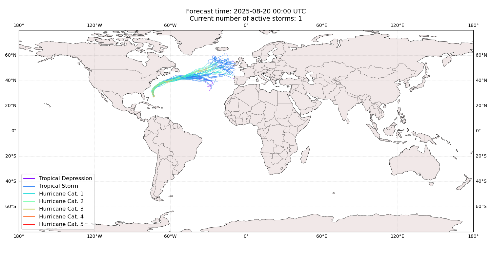
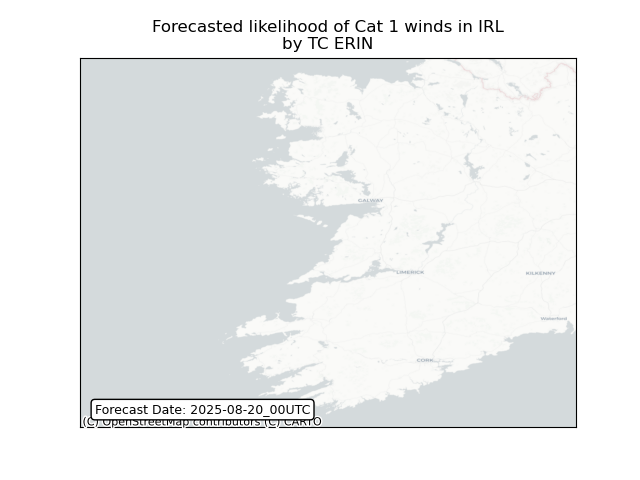
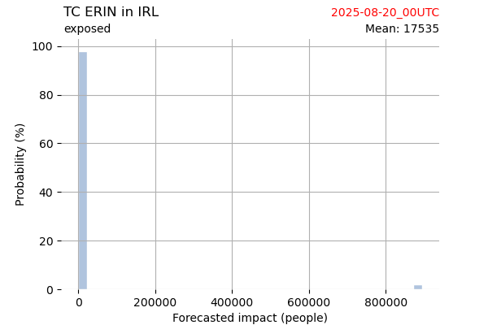
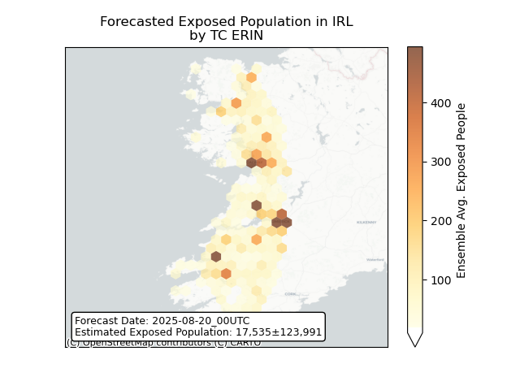
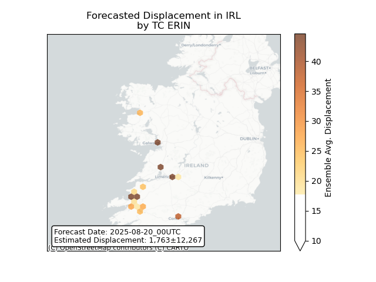

Displacement forecast
This is a WIP. All this is going to change, for now we’re just
dumping things here. ## Forecast for 2025-08-20 00:00 UTC
There are 1 active named storms.

Active storm ensemble tracks
ERIN Ireland: areas affected
 ## ERIN Ireland:
people exposed

Histogram of possible exposed
population

Map of possible exposed
population
ERIN Ireland: people
displaced
Histogram of possible displaced
population

Map of possible displaced
population